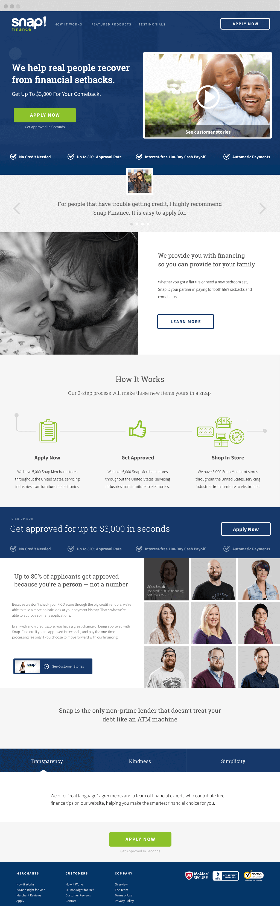
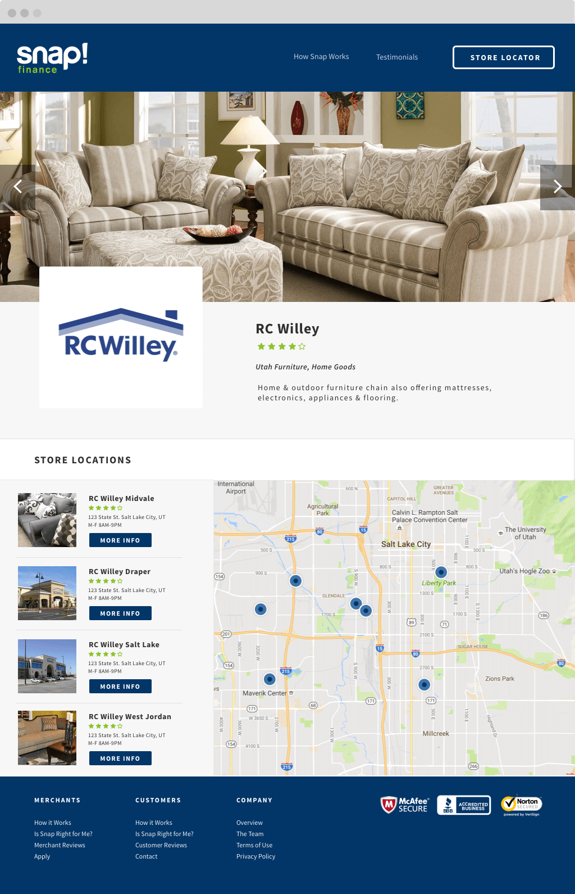

Snap Finance
Snap finance wanted a completely new look and feel for their website and other digital assets going foward. So I threw away their current design, and built a style guide and site from the ground up.
Design
UX Direction

